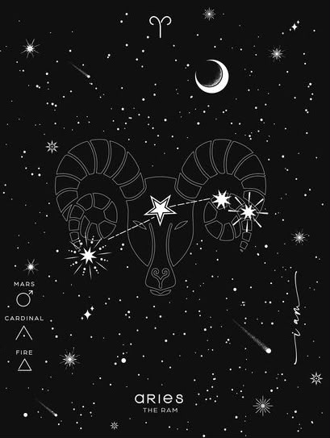
Signo de fuego, regido por Marte. Es energía, impulso y valentía. No piensa mucho, actúa. Líder nato, competitivo y directo. Le gusta ganar, odia perder y esperar.
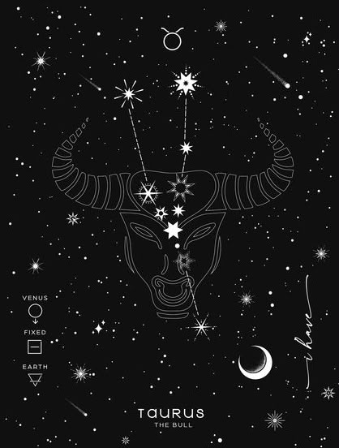
Signo de tierra, regido por Venus. Paciente, estable y sensorial. Ama la comodidad, la buena comida y el amor seguro. Es leal y trabajador, pero cuando dice no, es no para siempre.
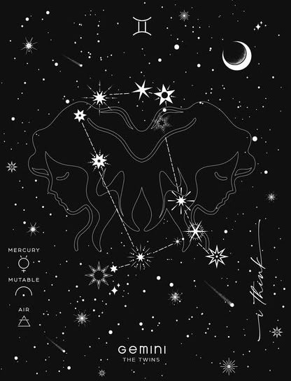
Signo de aire, regido por Mercurio. Curioso, inteligente y cambiante. Habla, aprende y se adapta a todo. Tiene mil intereses a la vez y se aburre si todo es rutina.
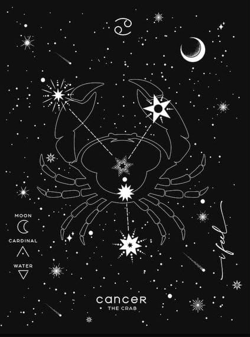
Signo de agua, regido por la Luna. Emocional, protector y familiar. Cuida, recuerda y siente todo muy dentro. Su casa es su refugio y su gente es todo.
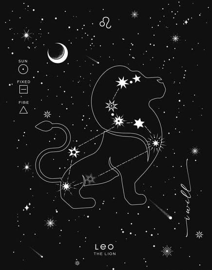
Signo de fuego, regido por el Sol. Brillante, seguro y de corazón grande. Le gusta ser centro, pero también hace brillar a los demás. Orgulloso, creativo y muy leal.
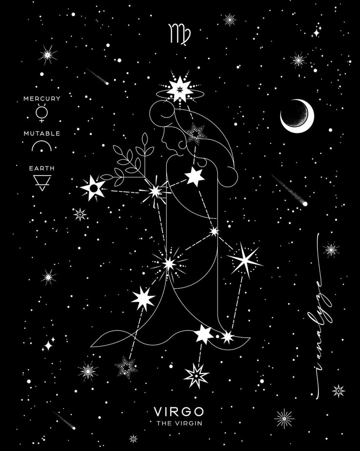
Signo de tierra, regido por Mercurio. Práctico, analítico y perfeccionista. Le gusta la organización y la precisión. Es trabajador y dedicado, pero puede ser crítico con los demás.
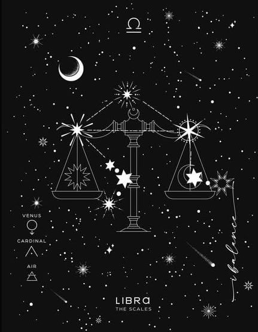
Signo de aire, regido por Venus. Busca el equilibrio, la justicia y la armonía. Diplomático, sociable y con un gran sentido de la estética. Evita el conflicto a toda costa.
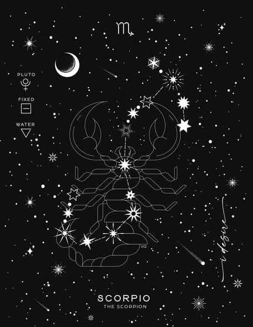
Signo de agua, regido por Plutón y Marte. Misterioso, intenso y profundo. No se queda en lo superficial, quiere la verdad. Pasional, reservado y extremadamente leal.
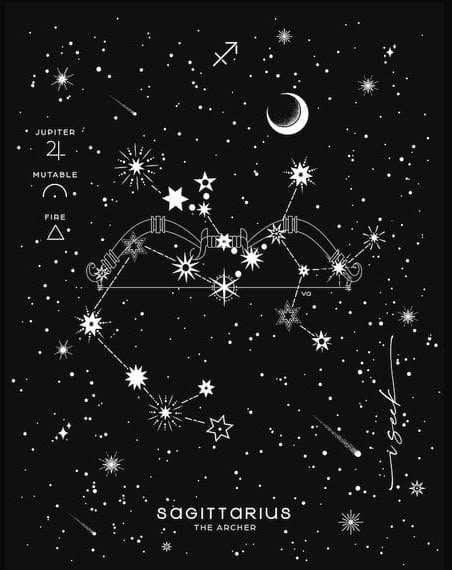
Signo de fuego, regido por Júpiter. Libre, optimista y aventurero. Ama viajar, aprender y decir lo que piensa sin filtro. Su vida es una búsqueda de sentido.
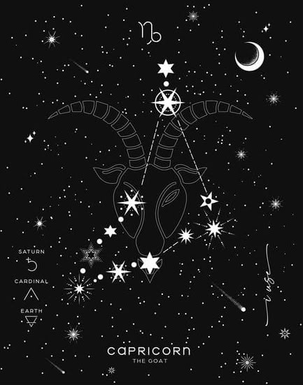
Signo de tierra, regido por Saturno. Ambicioso, disciplinado y realista. No habla mucho, hace mucho. Construye su futuro con paciencia y no se rinde hasta llegar a la cima.
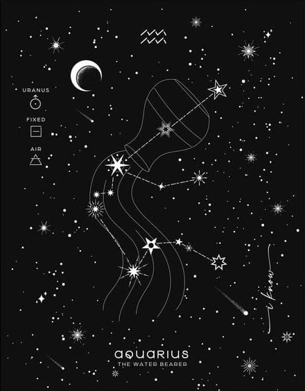
Signo de aire, regido por Urano. Original, independiente y humanitario. Piensa diferente y no le importa no encajar. Valora la libertad por encima de todo.
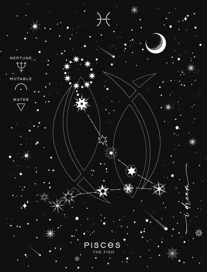
Signo de agua, regido por Neptuno. Soñador, sensible y empático. Vive con el corazón, siente lo de los demás como propio. Creativo, intuitivo y un poco en las nubes.